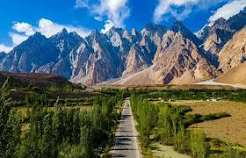
Hunza Valley
Hunza is famous for its breathtaking mountains, beautiful lakes, and peaceful valleys.
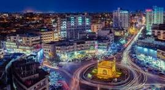
Discover breathtaking destinations, exciting adventures, and unforgettable travel experiences.
Explore DestinationsWelcome to Travel Diaries! Here I share my travel experiences, destination guides, and useful travel tips to inspire your next adventure.
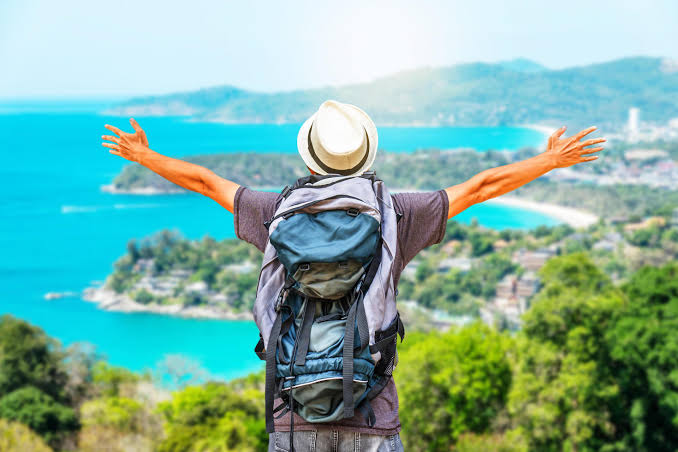

Hunza is famous for its breathtaking mountains, beautiful lakes, and peaceful valleys.
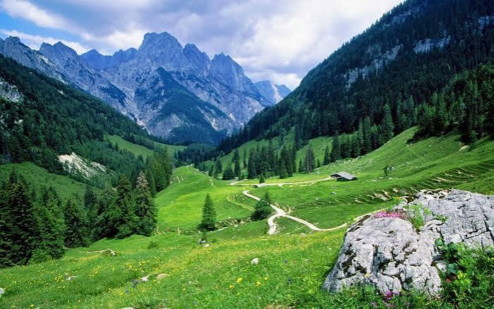
Swat is known as the Switzerland of Pakistan because of its natural beauty.
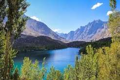
Skardu offers amazing lakes, mountains, and unforgettable adventures.
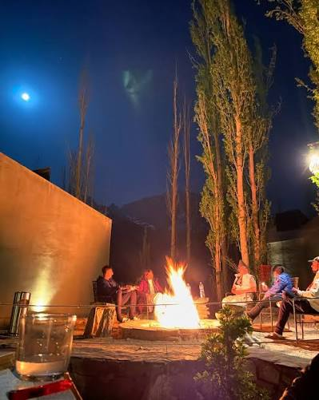
Published: July 2026
Hunza offers stunning mountain views, peaceful valleys, and unforgettable adventures.
Read More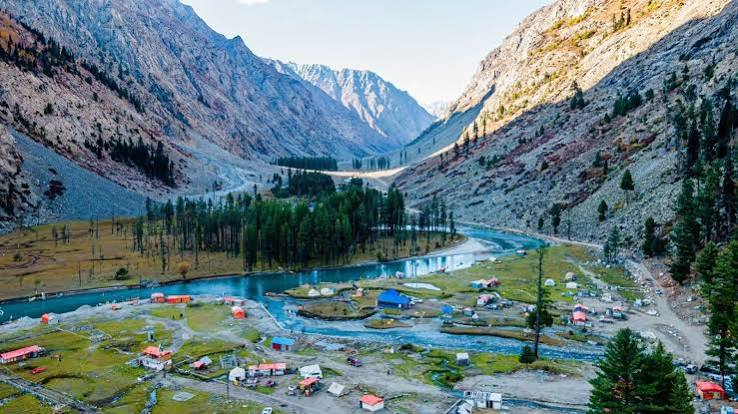
Published: June 2026
Swat is famous for its rivers, forests, and beautiful weather.
Read More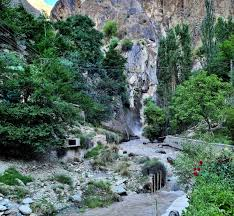
Published: May 2026
Skardu is a perfect destination for nature lovers and adventure seekers.
Read More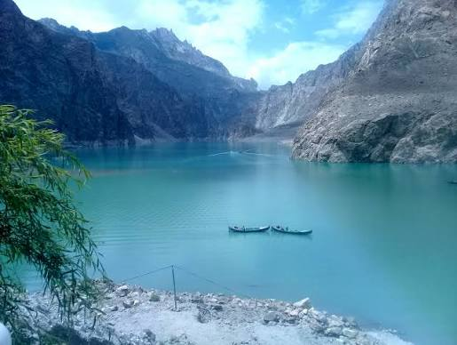

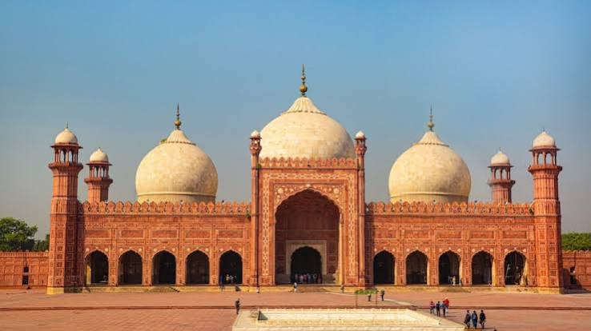
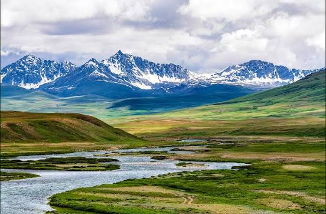
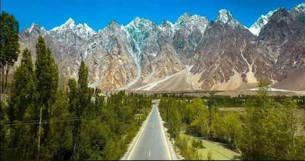
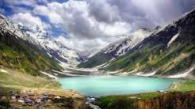
We'd love to hear from you! Feel free to send us a message.